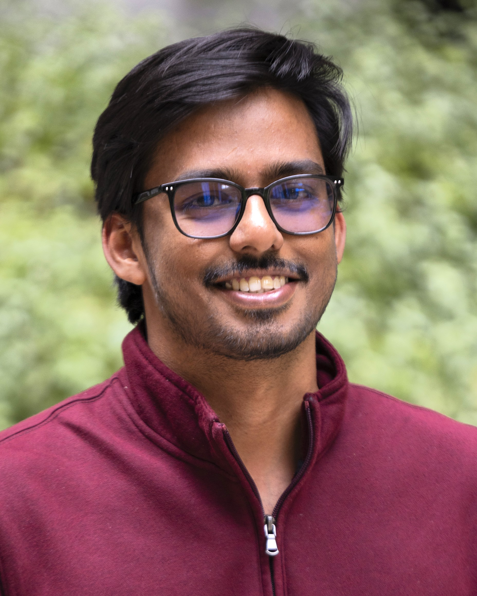

One day, I will unite these worlds, ensuring the science I create remains open and accessible to everyone.

My path hasn't been a straight line. It started in the classrooms of India, sharpened in the historic halls of the École Normale Supérieure in Paris, and eventually led me here, to the University of Arizona.
Along the way, I made a choice to chase the bigger picture. I traded pipettes for Python, moving from the wet lab to the theoretical realm to answer a single question: How does life evolve, and what limits it?
I believe the physical limits I face on a mountain are deeply connected to the thermodynamic limits a microbe faces in a hot spring.
Get My CV →